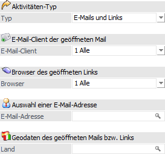
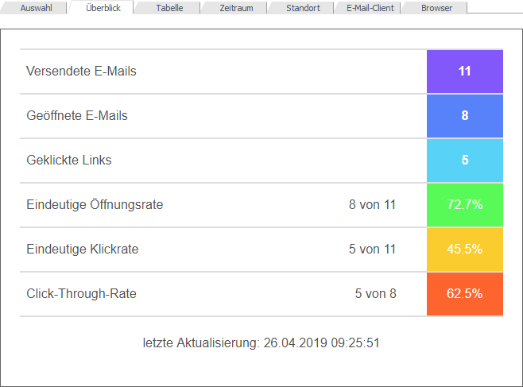
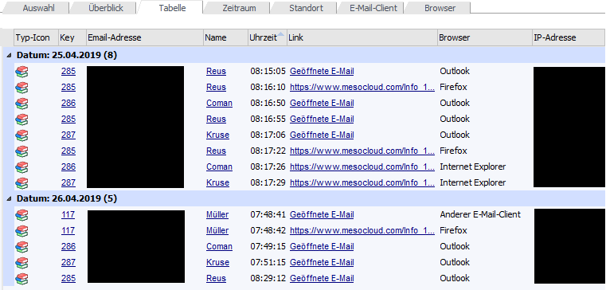
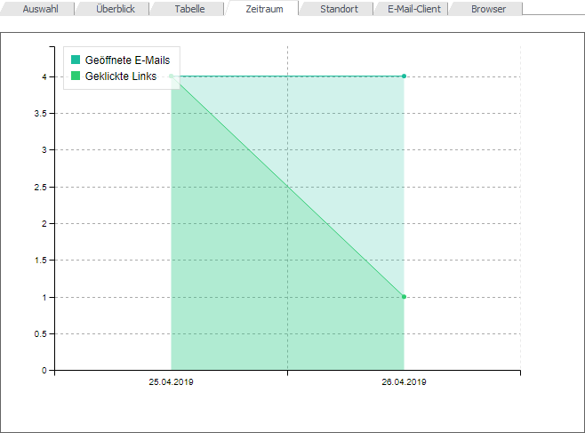
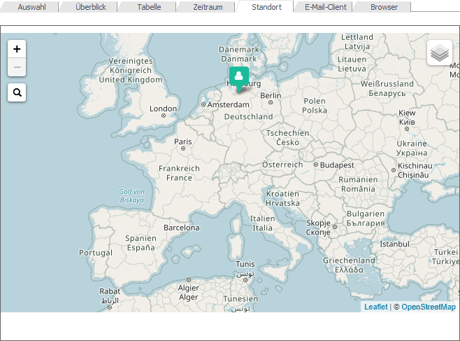
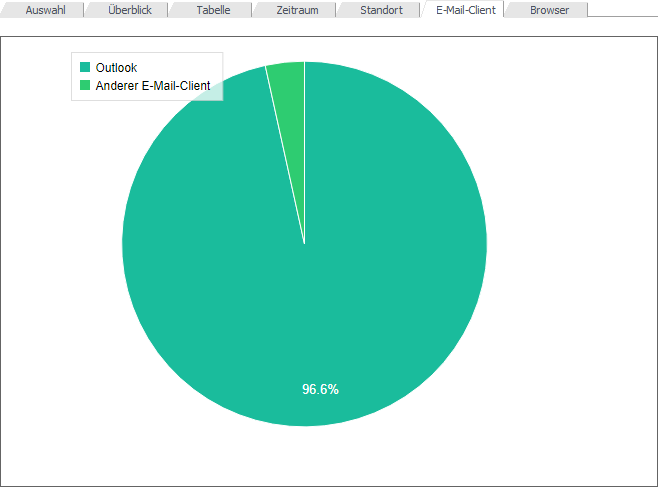
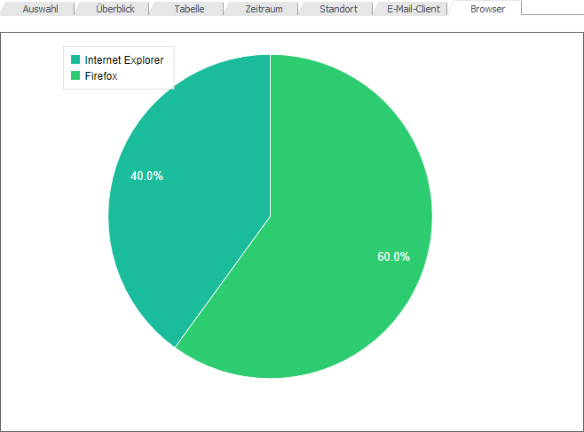

Die Analyse der Daten findet in sechs unterschiedlichen Registern statt, wobei die auszuwertenden Sendungen im Register "Auswahl" definiert werden:
ü Überblick
ü Tabelle
ü Zeitraum
ü Standort
ü E-Mail-Client
ü Browser
Achtung
Zur Analyse sind die MesoAnalytics-Daten erforderlich. Diese können mit Hilfe des Buttons "MesoAnalytics-Daten aktualisieren" angefordert werden.
Mit Ausnahme des Registers "Überblick" stehen diverse Selektionsmöglichkeiten pro Register zur Verfügung. Änderungen an der Selektion werden durch Anwahl des Buttons "Anzeigen/Aktualisieren" berücksichtigt.
Selektion

Ø Aktivitäten-Typ
Über eine Auswahlliste kann ausgewählt werden, ob geöffnete E-Mails und / oder geklickte Links analysiert werden sollen. Standardmäßig ist die Auswahl auf "E-Mails und Links" gesetzt.
Ø E-Mail-Client der geöffneten Mail
In diesem Bereich kann eine Abgrenzung der E-Mail-Clients der E-Mail-Empfänger erfolgen. Standardmäßig ist die Option "Alle" ausgewählt. Über eine Auswahlliste stehen folgende E-Mail-Clients zur Verfügung:
ü 1 - Alle
ü 2 - Outlook
ü 3 - Gmail
ü 4 - Android Email
ü 5 - iPhone
ü 6 - iPad
ü 7 - Thunderbird
ü 8 - Anderer E-Mail-Client
Ø Browser des geöffneten Links
In diesem Bereich kann eingeschränkt werden mit welchem Browser der E-Mail-Empfänger den Link geöffnet hat. Standardmäßig ist die Auswahl auf "Alle" vorbelegt. Über eine Auswahlliste stehen folgende Browser zur Verfügung:
ü 1 - Alle
ü 2 - Internet Explorer
ü 3 - Chrome
ü 4 - Firefox
ü 5 - Opera
ü 6 - Safari
ü 7 - Anderer Browser
Ø Auswahl einer E-Mail-Adresse
An dieser Stelle kann eine Eingrenzung auf eine bestimmte E-Mail-Adresse stattfinden, wobei der E-Mail-Matchcode zur Verfügung steht.
Ø Geodaten des geöffneten Mails bzw. Links
Über den Ländermatchcode kann hier auf ein jeweiliges Land der E-Mail-Empfänger eingegrenzt werden.
Register "Überblick"
Im Register "Überblick" gibt es sechs verschiedene Kennzahlen. Am Ende wird als Information das Datum der letzten Aktualisierung der ausgewählten Kampagne angezeigt.

Ø Versendete E-Mails
Anzeige der Anzahl der verschickten E-Mails.
Ø Geöffnete E-Mails
Anzeige der Anzahl der geöffneten E-Mails.
Ø Geklickte Links
Anzeige der Anzahl der geklickten Links.
Ø Eindeutige Öffnungsrate
Wie viele Emails wurden von den versendeten E-Mails geöffnet.
Ø Eindeutige Klickrate
Von wie vielen versendeten E-Mails wurden Links angeklickt.
Hinweis
Pro E-Mail wird nur ein Klick auf einen Link gezählt.
Ø Click-Through-Rate
Hier werden die geklickten Links in Bezug auf die geöffneten Emails gezählt.
Hinweis
Pro E-Mail wird nur ein Klick auf einen Link gezählt.
Register "Tabelle"
In der Tabelle wird dargestellt, wann welcher E-Mail-Empfänger eine E-Mail geöffnet bzw. einen Link angeklickt hat. Diese Tabelle ist standardmäßig nach Datum gruppiert, wobei pro Datum die Anzahl der Datensätze in Klammer angezeigt wird. Die Tabelle kann auch nach Excel exportiert werden.

Register "Zeitraum"
In dieser Darstellung werden die geöffneten E-Mails bzw. geklickten Links in Bezug auf die Zeit in einem Liniendiagramm dargestellt.

Register "Standort"
Die Daten werden anhand einer GeoMap dargestellt.

Register "E-Mail-Client"
In einem Tortendiagramm werden die verwendeten E-Mail-Clients der E-Mail-Empfänger dargestellt.

Register "Browser"
In einem Tortendiagramm werden die verwendeten Browser der E-Mail-Empfänger dargestellt.
